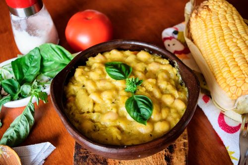
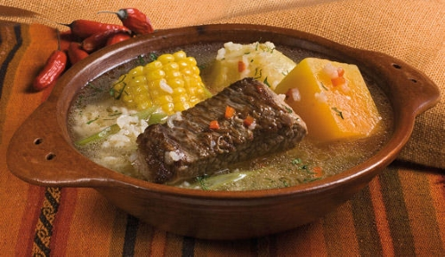

Pastel de Choclo
Nuestro pastel de choclo es la estrella de nuestra tienda gracias a su sabor auténticamente casero. Elaborado con maíz tierno y un delicioso pino, cada bocado provoca los mejores recuerdos en familia.

Porotos con Mazamorra
¿Buscas sabores auténticos chilenos? Prueba nuestros porotos con mazamorra. Con porotos suaves y mazamorra de maíz dulce, es un plato que refleja la esencia de la cocina tradicional chilena.

Cazuela de Vacuno
En nuestro menú, la cazuela de vacuno ocupa un lugar especial, representando la esencia misma de la cocina chilena. Preparada con trozos tiernos de carne de vacuno, papas, zapallo, choclo, y sazonada con hierbas aromáticas, cada cucharada te transportará a la mesa de tu hogar.